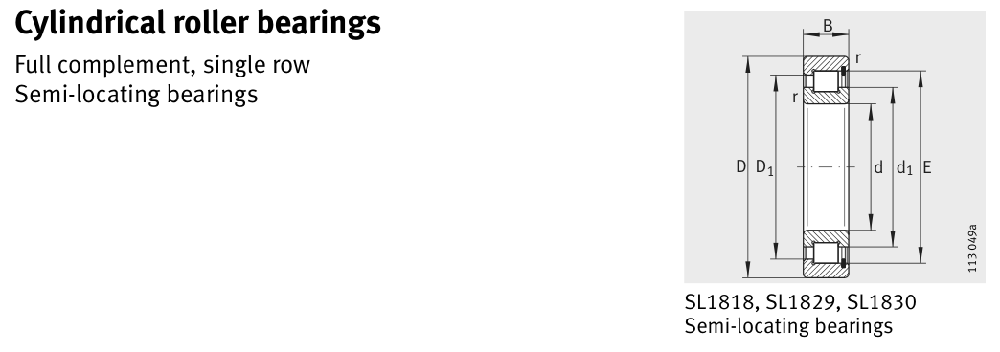

Original catalogue drawing - FAG Schaeffler HR 1, page 442

Scanned from the manufacturer catalogue page listing this part number. All part numbers printed on that table share the same drawing.
Scale cross-section
Blue = inner / outer ring, yellow = rolling element. Drawn to scale from this part's own
dimensions for selection reference only - not a manufacturing or assembly drawing.
Dimension table (mm / inch)
Symbol
Dimension
mm
inch
d
Bore diameter
500
19.685
D
Outside diameter
620
24.4094
B
Inner-ring / bearing width
56
2.2047
r
Chamfer (min)
3
0.1181
E
Roller-set outside dia.
594.5
23.4055
Notes
Weights are given in kg. Load ratings are shown in both the original catalogue units and the converted value (1 N = 0.2248 lbf). Data is provided for selection reference only - confirm against the latest official catalogue before ordering.
Main dimensions
Bore d (mm)
500
Outside dia. D (mm)
620
Width B (mm)
56
Inner-ring OD d1 (mm)
542
Inner-ring shoulder dia. D1 (mm)
581.5
Dimension E (mm)
594.5
Load ratings & speeds
Basic dynamic load rating Cr (lbs)
220313
Basic static load rating Cor (lbs)
460858
Basic dynamic load rating Cr (N)
980000
Basic static load rating C0r (N)
2.05e+06
Fatigue limit load Cur (N)
190000
Limiting speed nG (rpm)
580
Reference speed nB (rpm)
365
Weight
Weight (kg)
35.73
Mounting dimensions (fillets / shoulders)
Housing fillet r max (mm)
3
Bearing life (ISO 281 basic rating life)
C / P
Equivalent load P (N)
L10 (106 rev)
L10h at 100 rpm
4
245,000
102
16,932
6
163,333
392
65,416
8
122,500
1,024
170,667
10
98,000
2,154
359,072
15
65,333
8,323
1,387,244
Basic rating life per ISO 281: L10 = (C/P)10/3 with C = 980,000 N. Hours = L10 x 106 / (60n). Life-modification factors for lubrication, contamination and temperature (aISO) are not included.
Source & traceability
Brand
FAG
Source catalogue
FAG / Schaeffler Rolling Bearings HR 1
Catalogue page
p.442 (dimensions)
Load ratings in newtons, fatigue limit load Cur, limiting speed nG and reference speed nB.
Send us the quantity you need and we will come back with price and
lead time, normally within 24 hours. Equivalent parts from other brands can be quoted at the same time.